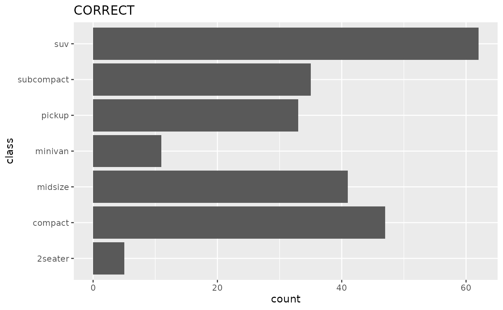

Sizes of images
There are default sizes for visualisations for slideshows and vignettes. They are included in the tracetheme package:
tracetheme::slide_dim
#> $slide_height
#> [1] 9
#>
#> $slide_width
#> [1] 16
tracetheme::vignette_dim
#> $vig_height
#> [1] 5
#>
#> $vig_width
#> [1] 8Capitalising axes
Capitalise the first word of all axes labels.
Use standard abbreviations (e.g. km) but ensure these are defined in the caption in all training materials & vignettes.
Axes
When time is represented on a plot, it should preferentially be selected as the x-axis.
When text labels are present on an axis, it should be on the y-axis, unless the labels express a time measurement.
In other words, prefer the option on the left to keep text legible at more figure sizes, without having to rotate the labels.

Multipanel Figures
Use the ‘tag’ option in ggplot for figures and subfigures, and capitalise the letters with a rounded bracket: A), B), C)
Number of lines/items per plot
The Overall recommendation to follow a “less is more” approach and avoid “chart junk”.
Recommendation to not focus on a specific set number for each and if needed, ask for feedback from team members, but overall:
- No. of elements on each plot should be maximum 6-7 based on below recommendations
- No. of lines on each plot should be maximum 5 based on below recommendations
- No. of annotations should be maximum 3 based on: max 3
Defining standard geoms
We generally prefer using shaded regions over dashed lines on plots needing these as the default option. However, this can be an issue on some projectors and so there should be a secondary default option for dashed lines.
Display of uncertainty
Bayesian
Bayesian credible intervals should be 95% intervals by default, further demarcation can be made at 50% and 75% intervals. The same applies to prediction or projection windows. If only a single interval is shown it should be the 95%. The caption of the ggplot item should define the type of interval. Central estimates should be the mean by default, if median provided this must be in the caption.
Frequentist
Frequentist confidence intervals should be 95% intervals by default. Method of calculating the interval should be given in the caption (e.g. binomial confidence interval, bootstrap interval). The same applies to prediction or projection windows. If only a single interval is shown it should be the 95%. The caption of the ggplot item should define the type of interval. Central estimates should be the mean.
Formatting for age group intervals
Use brackets to denote intervals, with hyphen separator and no space, i.e. (0-5], (5-10]. Square bracket indicates that the limit is included in the interval, while round bracket indicates the limit is not part of the interval. The default behaviour should be that the upper limit is part of the lower group. This should be specified in the caption.